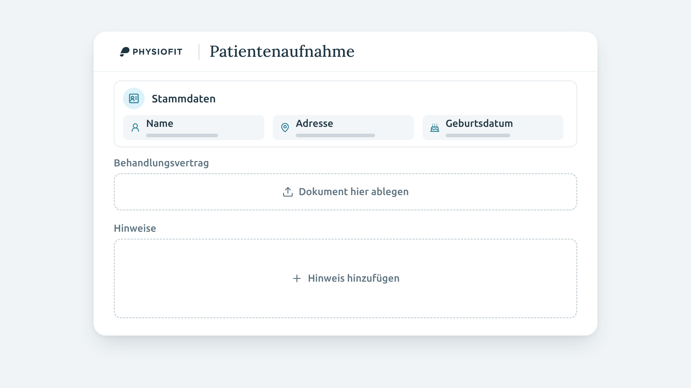
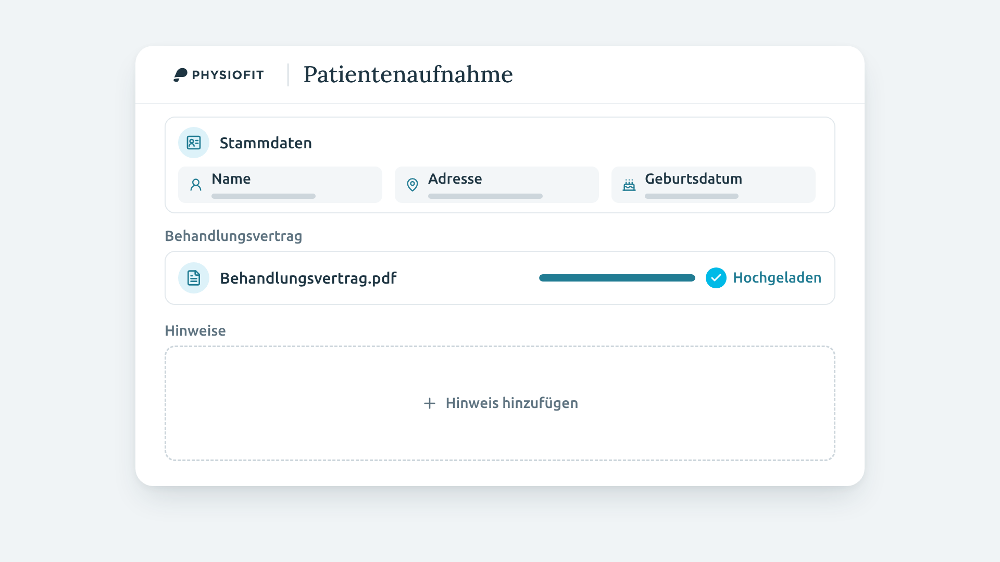
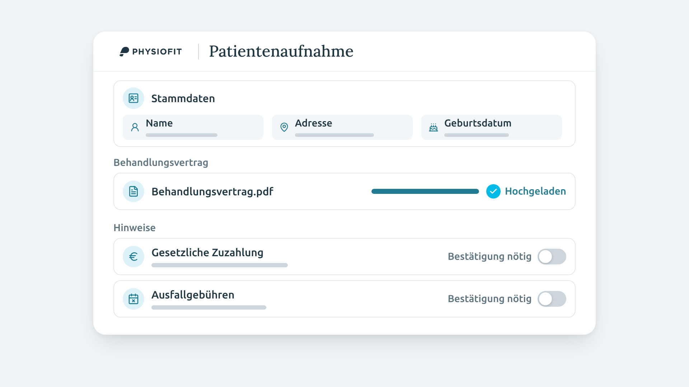
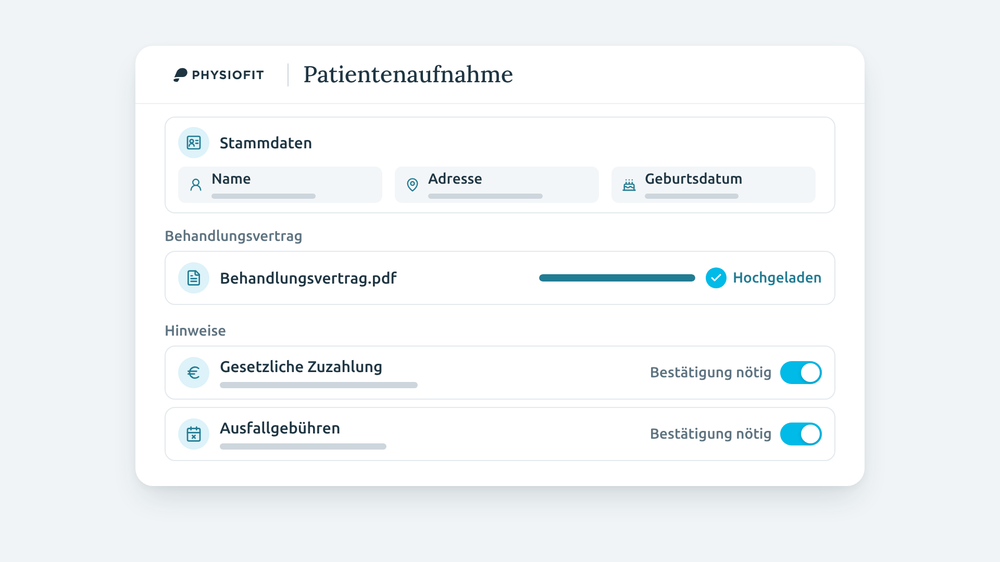
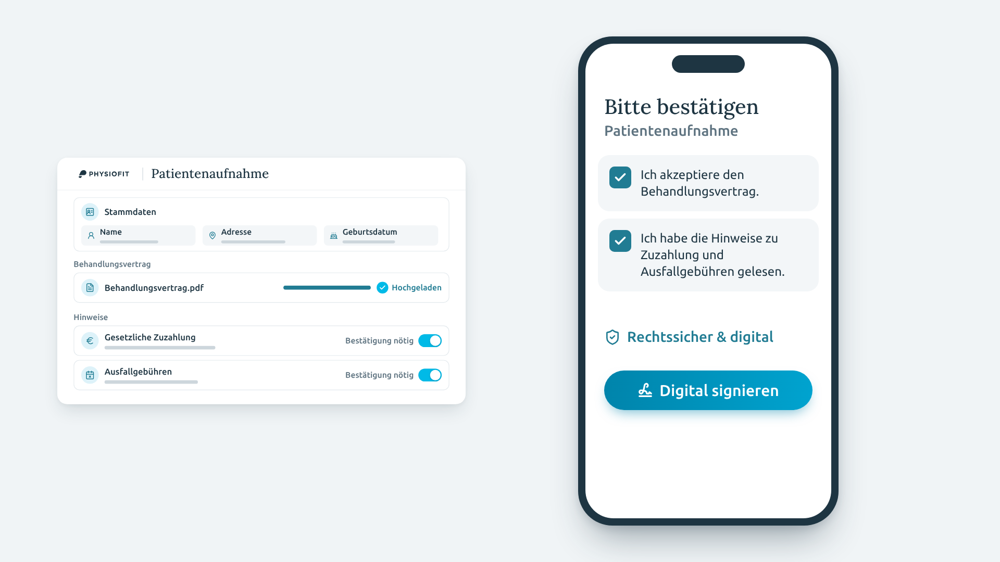

Storyboard · Patientenaufnahme Teil 4
Das digitale Aufnahmeformular einrichten: Stammdaten, Behandlungsvertrag, Hinweise mit Pflicht-Bestätigung, Signatur per Checkbox.

Vom ersten Bild an das Fenster „Patientenaufnahme“ mit Physiofit-Logo. In der Box „Stammdaten“ erscheinen darunter nacheinander Name, Adresse und Geburtsdatum, jeweils auf das gesprochene Wort.
„Frage Stammdaten wie Name, Adresse oder Geburtsdatum ab.“

Bei „Behandlungsvertrag“ landet die Datei in der Ablage, der Upload-Balken läuft voll, dann „Hochgeladen“.
„Füge deinen Behandlungsvertrag ein …“

Im Abschnitt Hinweise kommen zwei Zeilen dazu: „Gesetzliche Zuzahlung“ bei „Zuzahlung“, „Ausfallgebühren“ bei „Ausfallgebühren“. Die Schalter sind noch aus.
„… und ergänze wichtige Hinweise, zum Beispiel zur gesetzlichen Zuzahlung oder Ausfallgebühren.“

Bei „gesehen“ und „akzeptiert“ springen die Schalter „Bestätigung nötig“ nacheinander auf Cyan: Die Hinweise müssen bestätigt werden.
„Stelle dabei sicher, dass sie auch wirklich gesehen und akzeptiert werden.“

Das Fenster schrumpft nach links, rechts gleitet das Smartphone herein: die Sicht der Patientin bzw. des Patienten. „Rechtssicher & digital“, dann werden beide Checkboxen angehakt, zuletzt wird „Digital signieren“ angetippt.
„Lass Patienten alles rechtssicher und digital signieren. Ganz einfach per Checkbox.“